Next: Ayudantía Up: Modelos uniparamétricos Previous: 2.5d.
Sobre prioris no informativas: Para la verosimilitud binomial 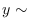bin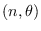 , muestre que 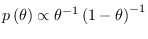 es la priori uniforme para el parámetro natural de la familia exponencial. Sol. Sabemos que la función de enlace canónica de distribución binomial es 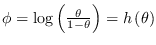. Por otro lado, usando el principio de invanrianza de Jeffrey 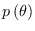 si es que es una función uno a uno. La demostración es bastante simple porque es básicamente transformación de variables aleatorias.
| 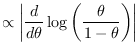 | 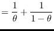 | si no nos acordamos que | ||||
| 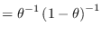 | 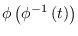 | |||||
| 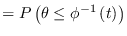 | 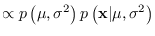 | |||||
| 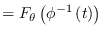 | 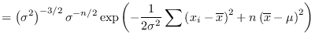 | 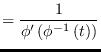 | ||||
| 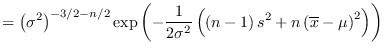 | 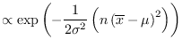 |
| 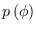 | 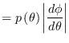 | |
| 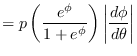 | ||
| 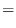 |